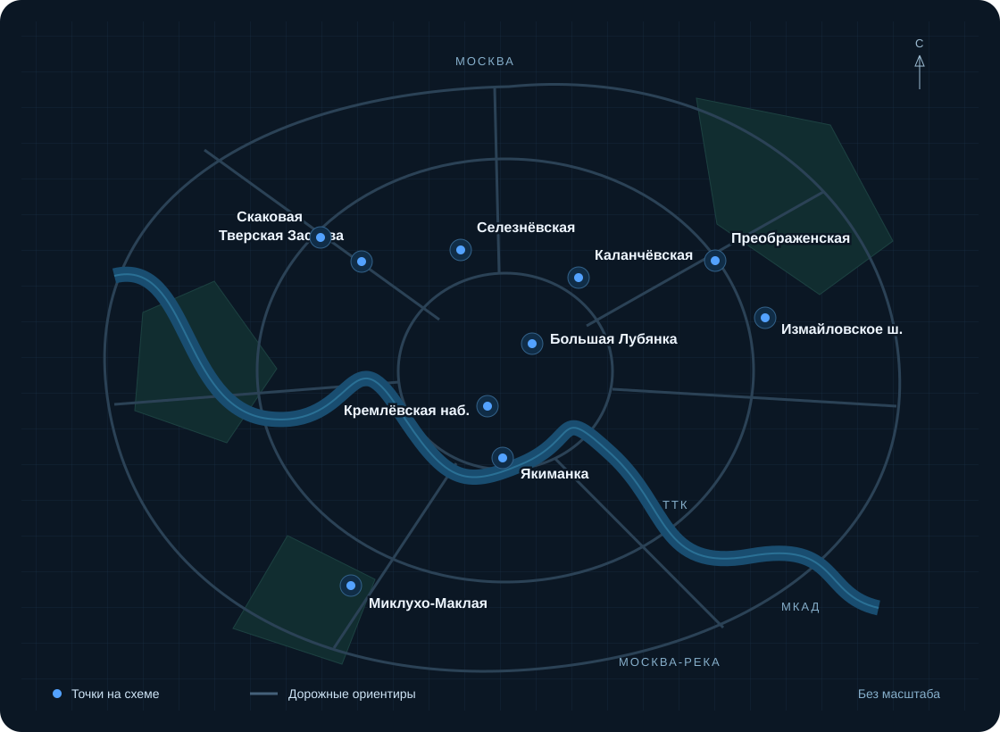

География работ
Основная территория работ компании - Москва. Возможность выполнения работ на конкретном объекте определяем по адресу и условиям доступа.
Схема оптоволокна
Точки из схемы компании на карте Москвы. Расположение показано условно; состав линий и возможность подключения уточняются по адресу объекта.

Точки на схеме
СелезнёвскаяСкаковаяТверская ЗаставаБольшая ЛубянкаКаланчёвскаяИзмайловское шоссеКремлёвская набережнаяЯкиманкаПреображенскаяМиклухо-Маклая
Для нового проекта нужны адреса начальной и конечной точки, план участка и сведения о коммуникациях.
Обсудим вашу задачу
Пришлите адрес объекта, состав работ и исходные материалы.
Подготовить запрос